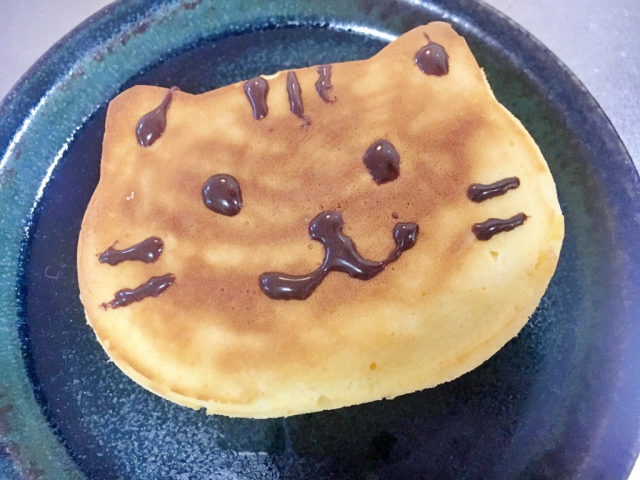

Giant Turkey Pancakes
Ingredients
- 1 Whole Turkey
- 2 Eggs
- 4 cups of Flour
- 4 gallons of Salt
- 1 gallon of Lemonade
- sometimes your tears
- The thoughts of finding out whether or not it is worth it
- 2 tons Maple Syrup
Cookng Time: 3 hours
About:
Sometimes my grandma would make me this when after she would threaten my chicken farm
Rating: 100/5 stars
How it looks:

This page was created by Kenneth Knott while studying at University of California, Santa Cruz.